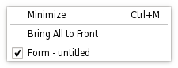

QMenu Class
The QMenu class provides a menu widget for use in menu bars, context menus, and other popup menus. More...
| Header: | #include <QMenu> |
| CMake: | find_package(Qt6 REQUIRED COMPONENTS Widgets) target_link_libraries(mytarget PRIVATE Qt6::Widgets) |
| qmake: | QT += widgets |
| Inherits: | QWidget |
Properties
|
|
Public Functions
| QMenu(QWidget *parent = nullptr) | |
| QMenu(const QString &title, QWidget *parent = nullptr) | |
| virtual | ~QMenu() |
| QAction * | actionAt(const QPoint &pt) const |
| QRect | actionGeometry(QAction *act) const |
| QAction * | activeAction() const |
| QAction * | addMenu(QMenu *menu) |
| QMenu * | addMenu(const QString &title) |
| QMenu * | addMenu(const QIcon &icon, const QString &title) |
| QAction * | addSection(const QString &text) |
| QAction * | addSection(const QIcon &icon, const QString &text) |
| QAction * | addSeparator() |
| void | clear() |
| QAction * | defaultAction() const |
| QAction * | exec() |
| QAction * | exec(const QPoint &p, QAction *action = nullptr) |
| void | hideTearOffMenu() |
| QIcon | icon() const |
| QAction * | insertMenu(QAction *before, QMenu *menu) |
| QAction * | insertSection(QAction *before, const QString &text) |
| QAction * | insertSection(QAction *before, const QIcon &icon, const QString &text) |
| QAction * | insertSeparator(QAction *before) |
| bool | isEmpty() const |
| bool | isTearOffEnabled() const |
| bool | isTearOffMenuVisible() const |
| QAction * | menuAction() const |
| void | popup(const QPoint &p, QAction *atAction = nullptr) |
| bool | separatorsCollapsible() const |
| void | setActiveAction(QAction *act) |
| void | setAsDockMenu() |
| void | setDefaultAction(QAction *act) |
| void | setIcon(const QIcon &icon) |
| void | setSeparatorsCollapsible(bool collapse) |
| void | setTearOffEnabled(bool) |
| void | setTitle(const QString &title) |
| void | setToolTipsVisible(bool visible) |
| void | showTearOffMenu(const QPoint &pos) |
| void | showTearOffMenu() |
| QString | title() const |
| NSMenu * | toNSMenu() |
| bool | toolTipsVisible() const |
Reimplemented Public Functions
| virtual QSize | sizeHint() const override |
Signals
| void | aboutToHide() |
| void | aboutToShow() |
| void | hovered(QAction *action) |
| void | triggered(QAction *action) |
Static Public Members
| QAction * | exec(const QList<QAction *> &actions, const QPoint &pos, QAction *at = nullptr, QWidget *parent = nullptr) |
| QMenu * | menuInAction(const QAction *action) |
Protected Functions
| int | columnCount() const |
| virtual void | initStyleOption(QStyleOptionMenuItem *option, const QAction *action) const |
Reimplemented Protected Functions
| virtual void | actionEvent(QActionEvent *e) override |
| virtual void | changeEvent(QEvent *e) override |
| virtual void | enterEvent(QEnterEvent *) override |
| virtual bool | event(QEvent *e) override |
| virtual bool | focusNextPrevChild(bool next) override |
| virtual void | hideEvent(QHideEvent *) override |
| virtual void | keyPressEvent(QKeyEvent *e) override |
| virtual void | leaveEvent(QEvent *) override |
| virtual void | mouseMoveEvent(QMouseEvent *e) override |
| virtual void | mousePressEvent(QMouseEvent *e) override |
| virtual void | mouseReleaseEvent(QMouseEvent *e) override |
| virtual void | paintEvent(QPaintEvent *e) override |
| virtual void | timerEvent(QTimerEvent *e) override |
| virtual void | wheelEvent(QWheelEvent *e) override |
Detailed Description

A menu widget is a selection menu. It can be either a pull-down menu in a menu bar or a standalone context menu. Pull-down menus are shown by the menu bar when the user clicks on the respective item or presses the specified shortcut key. Use QMenuBar::addMenu() to insert a menu into a menu bar. Context menus are usually invoked by some special keyboard key or by right-clicking. They can be executed either asynchronously with popup() or synchronously with exec(). Menus can also be invoked in response to button presses; these are just like context menus except for how they are invoked.
Actions
A menu consists of a list of action items. Actions are added with the addAction(), addActions() and insertAction() functions. An action is represented vertically and rendered by QStyle. In addition, actions can have a text label, an optional icon drawn on the very left side, and shortcut key sequence such as "Ctrl+X".
The existing actions held by a menu can be found with actions().
There are four kinds of action items: separators, actions that show a submenu, widgets, and actions that perform an action. Separators are inserted with addSeparator(), submenus with addMenu(), and all other items are considered action items.
When inserting action items you usually specify a receiver and a slot. The receiver will be notified whenever the item is triggered(). In addition, QMenu provides two signals, triggered() and hovered(), which signal the QAction that was triggered from the menu.
You clear a menu with clear() and remove individual action items with removeAction().
A QMenu can also provide a tear-off menu. A tear-off menu is a top-level window that contains a copy of the menu. This makes it possible for the user to "tear off" frequently used menus and position them in a convenient place on the screen. If you want this functionality for a particular menu, insert a tear-off handle with setTearOffEnabled(). When using tear-off menus, bear in mind that the concept isn't typically used on Microsoft Windows so some users may not be familiar with it. Consider using a QToolBar instead.
Widgets can be inserted into menus with the QWidgetAction class. Instances of this class are used to hold widgets, and are inserted into menus with the addAction() overload that takes a QAction. If the QWidgetAction fires the triggered() signal, the menu will close.
Warning: To make QMenu visible on the screen, exec() or popup() should be used instead of show() or setVisible(). To hide or disable the menu in the menubar, or in another menu to which it was added as a submenu, use the respective properties of menuAction() instead.
QMenu on macOS with Qt Build Against Cocoa
QMenu can be inserted only once in a menu/menubar. Subsequent insertions will have no effect or will result in a disabled menu item.
See the Menus example for an example of how to use QMenuBar and QMenu in your application.
Important inherited functions: addAction(), removeAction(), clear(), addSeparator(), and addMenu().
See also QMenuBar and Menus Example.
Property Documentation
icon : QIcon
This property holds the icon of the menu
This is equivalent to the QAction::icon property of the menuAction().
By default, if no icon is explicitly set, this property contains a null icon.
Access functions:
| QIcon | icon() const |
| void | setIcon(const QIcon &icon) |
separatorsCollapsible : bool
This property holds whether consecutive separators should be collapsed
This property specifies whether consecutive separators in the menu should be visually collapsed to a single one. Separators at the beginning or the end of the menu are also hidden.
By default, this property is true.
Access functions:
| bool | separatorsCollapsible() const |
| void | setSeparatorsCollapsible(bool collapse) |
tearOffEnabled : bool
This property holds whether the menu supports being torn off
When true, the menu contains a special tear-off item (often shown as a dashed line at the top of the menu) that creates a copy of the menu when it is triggered.
This "torn-off" copy lives in a separate window. It contains the same menu items as the original menu, with the exception of the tear-off handle.
By default, this property is false.
Access functions:
| bool | isTearOffEnabled() const |
| void | setTearOffEnabled(bool) |
title : QString
This property holds the title of the menu
This is equivalent to the QAction::text property of the menuAction().
By default, this property contains an empty string.
Access functions:
| QString | title() const |
| void | setTitle(const QString &title) |
toolTipsVisible : bool
This property holds whether tooltips of menu actions should be visible
This property specifies whether action menu entries show their tooltip.
By default, this property is false.
Access functions:
| bool | toolTipsVisible() const |
| void | setToolTipsVisible(bool visible) |
Member Function Documentation
[explicit] QMenu::QMenu(QWidget *parent = nullptr)
Constructs a menu with parent parent.
Although a popup menu is always a top-level widget, if a parent is passed the popup menu will be deleted when that parent is destroyed (as with any other QObject).
[explicit] QMenu::QMenu(const QString &title, QWidget *parent = nullptr)
Constructs a menu with a title and a parent.
Although a popup menu is always a top-level widget, if a parent is passed the popup menu will be deleted when that parent is destroyed (as with any other QObject).
See also title.
[virtual noexcept] QMenu::~QMenu()
Destroys the menu.
[signal] void QMenu::aboutToHide()
This signal is emitted just before the menu is hidden from the user.
See also aboutToShow() and hide().
[signal] void QMenu::aboutToShow()
This signal is emitted just before the menu is shown to the user.
See also aboutToHide() and show().
QAction *QMenu::actionAt(const QPoint &pt) const
Returns the item at pt; returns nullptr if there is no item there.
[override virtual protected] void QMenu::actionEvent(QActionEvent *e)
Reimplements: QWidget::actionEvent(QActionEvent *event).
QRect QMenu::actionGeometry(QAction *act) const
Returns the geometry of action act.
QAction *QMenu::activeAction() const
Returns the currently highlighted action, or nullptr if no action is currently highlighted.
See also setActiveAction().
QAction *QMenu::addMenu(QMenu *menu)
This convenience function adds menu as a submenu to this menu. It returns menu's menuAction(). This menu does not take ownership of menu.
See also QWidget::addAction() and QMenu::menuAction().
QMenu *QMenu::addMenu(const QString &title)
Appends a new QMenu with title to the menu. The menu takes ownership of the menu. Returns the new menu.
See also QWidget::addAction() and QMenu::menuAction().
QMenu *QMenu::addMenu(const QIcon &icon, const QString &title)
Appends a new QMenu with icon and title to the menu. The menu takes ownership of the menu. Returns the new menu.
See also QWidget::addAction() and QMenu::menuAction().
QAction *QMenu::addSection(const QString &text)
This convenience function creates a new section action, i.e. an action with QAction::isSeparator() returning true but also having text hint, and adds the new action to this menu's list of actions. It returns the newly created action.
The rendering of the hint is style and platform dependent. Widget styles can use the text information in the rendering for sections, or can choose to ignore it and render sections like simple separators.
QMenu takes ownership of the returned QAction.
See also QWidget::addAction().
QAction *QMenu::addSection(const QIcon &icon, const QString &text)
This convenience function creates a new section action, i.e. an action with QAction::isSeparator() returning true but also having text and icon hints, and adds the new action to this menu's list of actions. It returns the newly created action.
The rendering of the hints is style and platform dependent. Widget styles can use the text and icon information in the rendering for sections, or can choose to ignore them and render sections like simple separators.
QMenu takes ownership of the returned QAction.
See also QWidget::addAction().
QAction *QMenu::addSeparator()
This convenience function creates a new separator action, i.e. an action with QAction::isSeparator() returning true, and adds the new action to this menu's list of actions. It returns the newly created action.
QMenu takes ownership of the returned QAction.
See also QWidget::addAction().
[override virtual protected] void QMenu::changeEvent(QEvent *e)
Reimplements: QWidget::changeEvent(QEvent *event).
void QMenu::clear()
Removes all the menu's actions. Actions owned by the menu and not shown in any other widget are deleted.
See also removeAction().
[protected] int QMenu::columnCount() const
If a menu does not fit on the screen it lays itself out so that it does fit. It is style dependent what layout means (for example, on Windows it will use multiple columns).
This functions returns the number of columns necessary.
QAction *QMenu::defaultAction() const
Returns the current default action.
See also setDefaultAction().
[override virtual protected] void QMenu::enterEvent(QEnterEvent *)
Reimplements: QWidget::enterEvent(QEnterEvent *event).
[override virtual protected] bool QMenu::event(QEvent *e)
Reimplements: QWidget::event(QEvent *event).
QAction *QMenu::exec()
Executes this menu synchronously.
This is equivalent to exec(pos()).
This returns the triggered QAction in either the popup menu or one of its submenus, or nullptr if no item was triggered (normally because the user pressed Esc).
In most situations you'll want to specify the position yourself, for example, the current mouse position:
exec(QCursor::pos());
or aligned to a widget:
exec(somewidget.mapToGlobal(QPoint(0,0)));
or in reaction to a QMouseEvent *e:
exec(e->globalPos());
QAction *QMenu::exec(const QPoint &p, QAction *action = nullptr)
This is an overloaded function.
Executes this menu synchronously.
Pops up the menu so that the action action will be at the specified global position p. To translate a widget's local coordinates into global coordinates, use QWidget::mapToGlobal().
This returns the triggered QAction in either the popup menu or one of its submenus, or nullptr if no item was triggered (normally because the user pressed Esc).
Note that all signals are emitted as usual. If you connect a QAction to a slot and call the menu's exec(), you get the result both via the signal-slot connection and in the return value of exec().
Common usage is to position the menu at the current mouse position:
exec(QCursor::pos());
or aligned to a widget:
exec(somewidget.mapToGlobal(QPoint(0, 0)));
or in reaction to a QMouseEvent *e:
exec(e->globalPos());
When positioning a menu with exec() or popup(), bear in mind that you cannot rely on the menu's current size(). For performance reasons, the menu adapts its size only when necessary. So in many cases, the size before and after the show is different. Instead, use sizeHint() which calculates the proper size depending on the menu's current contents.
See also popup() and QWidget::mapToGlobal().
[static] QAction *QMenu::exec(const QList<QAction *> &actions, const QPoint &pos, QAction *at = nullptr, QWidget *parent = nullptr)
This is an overloaded function.
Executes a menu synchronously.
The menu's actions are specified by the list of actions. The menu will pop up so that the specified action, at, appears at global position pos. If at is not specified then the menu appears at position pos. parent is the menu's parent widget; specifying the parent will provide context when pos alone is not enough to decide where the menu should go (e.g., with multiple desktops or when the parent is embedded in QGraphicsView).
The function returns the triggered QAction in either the popup menu or one of its submenus, or nullptr if no item was triggered (normally because the user pressed Esc).
This is equivalent to:
QMenu menu; QAction *at = actions[0]; // Assumes actions is not empty for (QAction *a : std::as_const(actions)) menu.addAction(a); menu.exec(pos, at);
See also popup() and QWidget::mapToGlobal().
[override virtual protected] bool QMenu::focusNextPrevChild(bool next)
Reimplements: QWidget::focusNextPrevChild(bool next).
[override virtual protected] void QMenu::hideEvent(QHideEvent *)
Reimplements: QWidget::hideEvent(QHideEvent *event).
void QMenu::hideTearOffMenu()
This function will forcibly hide the torn off menu making it disappear from the user's desktop.
See also showTearOffMenu(), isTearOffMenuVisible(), and isTearOffEnabled().
[signal] void QMenu::hovered(QAction *action)
This signal is emitted when a menu action is highlighted; action is the action that caused the signal to be emitted.
Often this is used to update status information.
See also triggered() and QAction::hovered().
[virtual protected] void QMenu::initStyleOption(QStyleOptionMenuItem *option, const QAction *action) const
Initialize option with the values from this menu and information from action. This method is useful for subclasses when they need a QStyleOptionMenuItem, but don't want to fill in all the information themselves.
See also QStyleOption::initFrom() and QMenuBar::initStyleOption().
QAction *QMenu::insertMenu(QAction *before, QMenu *menu)
This convenience function inserts menu before action before and returns the menus menuAction().
See also QWidget::insertAction() and addMenu().
QAction *QMenu::insertSection(QAction *before, const QString &text)
This convenience function creates a new title action, i.e. an action with QAction::isSeparator() returning true but also having text hint. The function inserts the newly created action into this menu's list of actions before action before and returns it.
The rendering of the hint is style and platform dependent. Widget styles can use the text information in the rendering for sections, or can choose to ignore it and render sections like simple separators.
QMenu takes ownership of the returned QAction.
See also QWidget::insertAction() and addSection().
QAction *QMenu::insertSection(QAction *before, const QIcon &icon, const QString &text)
This convenience function creates a new title action, i.e. an action with QAction::isSeparator() returning true but also having text and icon hints. The function inserts the newly created action into this menu's list of actions before action before and returns it.
The rendering of the hints is style and platform dependent. Widget styles can use the text and icon information in the rendering for sections, or can choose to ignore them and render sections like simple separators.
QMenu takes ownership of the returned QAction.
See also QWidget::insertAction() and addSection().
QAction *QMenu::insertSeparator(QAction *before)
This convenience function creates a new separator action, i.e. an action with QAction::isSeparator() returning true. The function inserts the newly created action into this menu's list of actions before action before and returns it.
QMenu takes ownership of the returned QAction.
See also QWidget::insertAction() and addSeparator().
bool QMenu::isEmpty() const
Returns true if there are no visible actions inserted into the menu, false otherwise.
See also QWidget::actions().
bool QMenu::isTearOffMenuVisible() const
When a menu is torn off a second menu is shown to display the menu contents in a new window. When the menu is in this mode and the menu is visible returns true; otherwise false.
See also showTearOffMenu(), hideTearOffMenu(), and isTearOffEnabled().
[override virtual protected] void QMenu::keyPressEvent(QKeyEvent *e)
Reimplements: QWidget::keyPressEvent(QKeyEvent *event).
[override virtual protected] void QMenu::leaveEvent(QEvent *)
Reimplements: QWidget::leaveEvent(QEvent *event).
QAction *QMenu::menuAction() const
Returns the action associated with this menu.
[static] QMenu *QMenu::menuInAction(const QAction *action)
Returns the menu contained by action, or nullptr if action does not contain a menu.
In widget applications, actions that contain menus can be used to create menu items with submenus, or inserted into toolbars to create buttons with popup menus.
[override virtual protected] void QMenu::mouseMoveEvent(QMouseEvent *e)
Reimplements: QWidget::mouseMoveEvent(QMouseEvent *event).
[override virtual protected] void QMenu::mousePressEvent(QMouseEvent *e)
Reimplements: QWidget::mousePressEvent(QMouseEvent *event).
[override virtual protected] void QMenu::mouseReleaseEvent(QMouseEvent *e)
Reimplements: QWidget::mouseReleaseEvent(QMouseEvent *event).
[override virtual protected] void QMenu::paintEvent(QPaintEvent *e)
Reimplements: QWidget::paintEvent(QPaintEvent *event).
void QMenu::popup(const QPoint &p, QAction *atAction = nullptr)
Displays the menu so that the action atAction will be at the specified global position p. To translate a widget's local coordinates into global coordinates, use QWidget::mapToGlobal().
When positioning a menu with exec() or popup(), bear in mind that you cannot rely on the menu's current size(). For performance reasons, the menu adapts its size only when necessary, so in many cases, the size before and after the show is different. Instead, use sizeHint() which calculates the proper size depending on the menu's current contents.
See also QWidget::mapToGlobal() and exec().
void QMenu::setActiveAction(QAction *act)
Sets the currently highlighted action to act.
See also activeAction().
void QMenu::setAsDockMenu()
Set this menu to be the dock menu available by option-clicking on the application dock icon. Available on macOS only.
void QMenu::setDefaultAction(QAction *act)
This sets the default action to act. The default action may have a visual cue, depending on the current QStyle. A default action usually indicates what will happen by default when a drop occurs.
See also defaultAction().
void QMenu::showTearOffMenu(const QPoint &pos)
This function will forcibly show the torn off menu making it appear on the user's desktop at the specified global position pos.
See also hideTearOffMenu(), isTearOffMenuVisible(), and isTearOffEnabled().
void QMenu::showTearOffMenu()
This is an overloaded function.
This function will forcibly show the torn off menu making it appear on the user's desktop under the mouse currsor.
See also hideTearOffMenu(), isTearOffMenuVisible(), and isTearOffEnabled().
[override virtual] QSize QMenu::sizeHint() const
Reimplements an access function for property: QWidget::sizeHint.
[override virtual protected] void QMenu::timerEvent(QTimerEvent *e)
Reimplements: QObject::timerEvent(QTimerEvent *event).
NSMenu *QMenu::toNSMenu()
Returns the native NSMenu for this menu. Available on macOS only.
Note: Qt sets the delegate on the native menu. If you need to set your own delegate, make sure you save the original one and forward any calls to it.
[signal] void QMenu::triggered(QAction *action)
This signal is emitted when an action in this menu is triggered.
action is the action that caused the signal to be emitted.
Normally, you connect each menu action's triggered() signal to its own custom slot, but sometimes you will want to connect several actions to a single slot, for example, when you have a group of closely related actions, such as "left justify", "center", "right justify".
Note: This signal is emitted for the main parent menu in a hierarchy. Hence, only the parent menu needs to be connected to a slot; sub-menus need not be connected.
See also hovered() and QAction::triggered().
[override virtual protected] void QMenu::wheelEvent(QWheelEvent *e)
Reimplements: QWidget::wheelEvent(QWheelEvent *event).